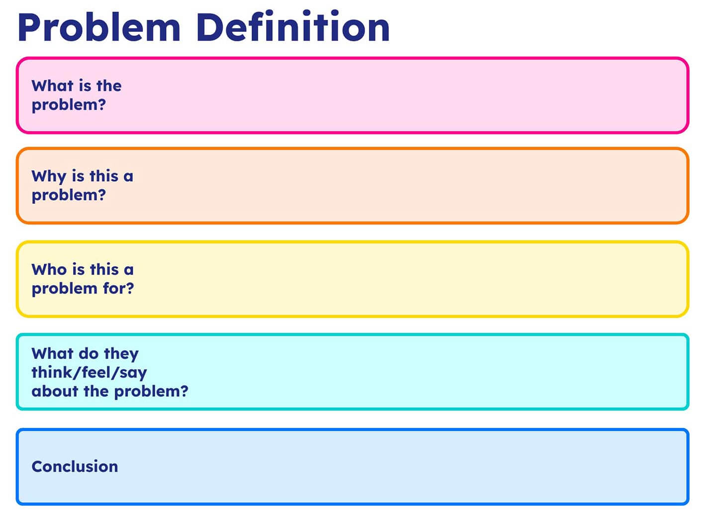
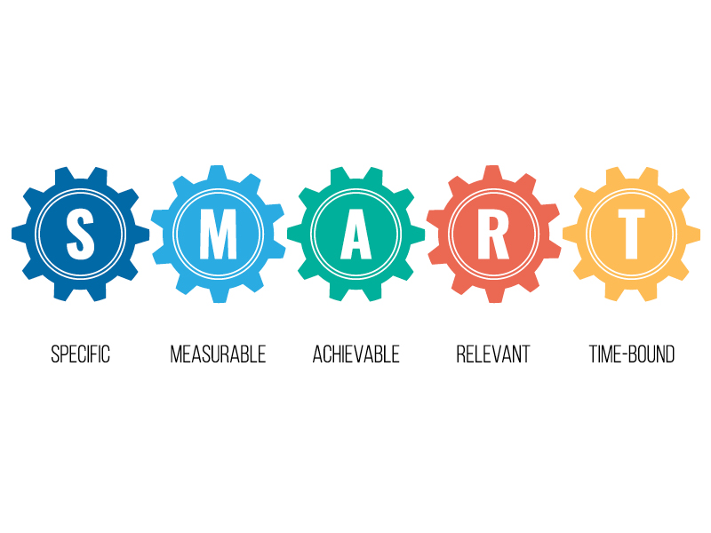
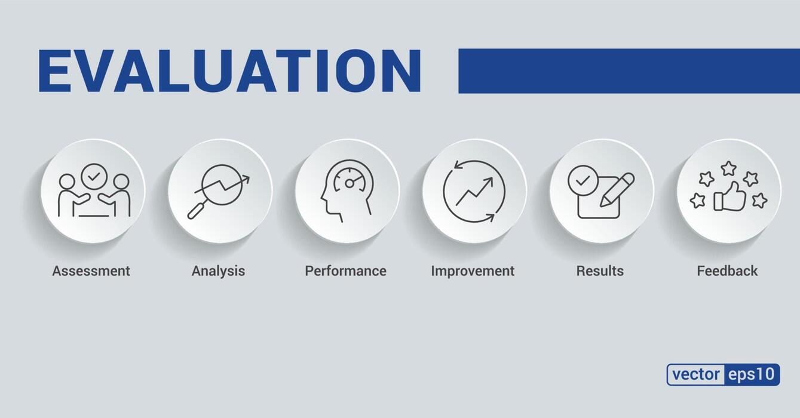
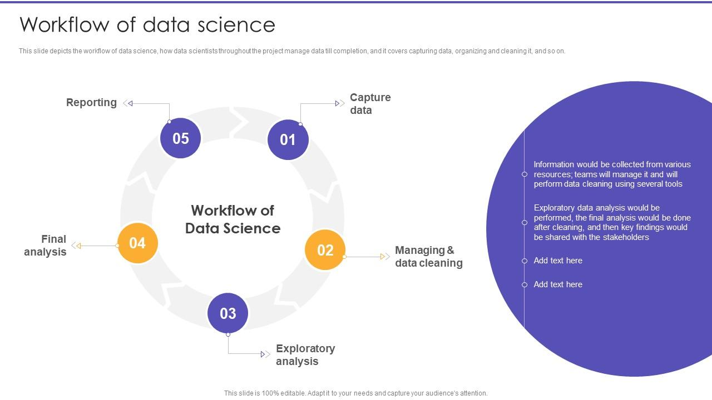
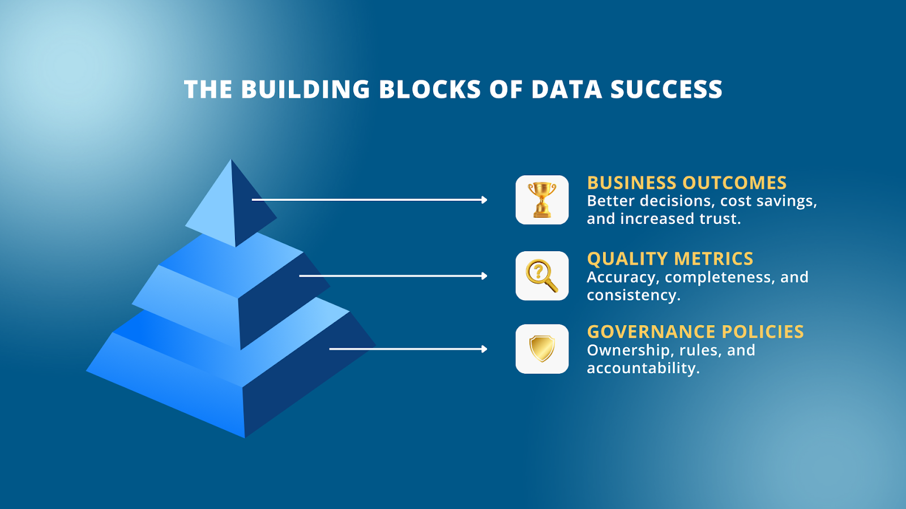
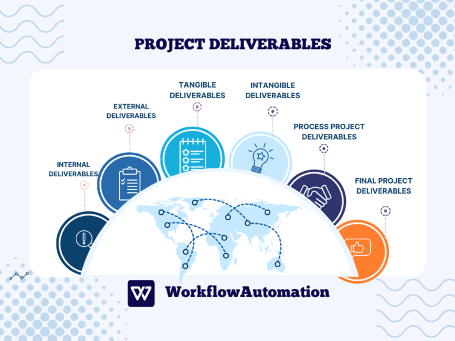

My Work Structure: Methodology Blueprint
This page explains my end-to-end execution model, from stakeholder requests to deliverables, with section-based visual placeholders for demonstration.
Back To Summary SectionStakeholder & Context Analysis
Every project is initiated through structured contextual diagnostics and stakeholder requests mapping. I examine institutional mandates, decision hierarchies, programme logic, data maturity levels, and environmental constraints to ensure analytical design is contextually grounded and strategically aligned.
This phase establishes:
- Organisational and programme theory mapping
- Decision-use case identification
- Data ecosystem and infrastructure audit
- Risk, bias, and feasibility assessment
- Alignment with policy, regulatory, or market conditions
By anchoring analysis within operational reality, technical outputs remain relevant, implementable, and strategically defensible.
Problem Definition
I Research the Problem, the cause and the impending effect, then formalise analytical challenges into research or performance questions. Ambiguity is replaced with structured inquiry, defined variables, measurable endpoints, and clearly bounded scope.
This stage produces:
- Operationalised research questions or business hypotheses
- Defined dependent and independent variables
- Analytical scope and assumptions documentation
- Risk and uncertainty framing
- Success metrics tied to measurable outcomes
A precisely defined problem architecture ensures methodological coherence and analytical efficiency.

SMART Objectives & KPI Mapping
Strategic objectives are decomposed into measurable indicators through structured KPI architecture. I design hierarchical measurement systems linking inputs, activities, outputs, and long-term impact.
Core components include:
- SMART objective structuring with statistical measurability
- Indicator operational definitions and metadata standards
- Baseline establishment and target modelling
- Output-outcome-impact causal linkage
- Performance sensitivity thresholds
This measurement architecture enables rigorous monitoring, longitudinal evaluation, and quantitative accountability.

Analytical & Evaluation Frameworks
I apply formal analytical and evaluation frameworks to ensure methodological discipline and inferential validity. Framework selection is driven by research design requirements, causal assumptions, and decision complexity.
Applied frameworks may include depending on context:
- Theory of Change modelling and causal pathway structuring
- Logical Framework (LogFrame) matrices
- Results-Based Management systems
- CRISP-DM lifecycle for data mining and modelling
- Quasi-experimental designs (DiD, PSM, regression discontinuity)
- Time-series modelling and longitudinal performance analysis
- Bayesian and multilevel modelling approaches
These structures ensure that inference is transparent, reproducible, and scientifically defensible.

Methodology Design & Workflow Architecture
Technical execution is governed by reproducible, modular workflow architecture integrating data engineering, statistical modelling, and computational automation.
This section presents my professional methodology profile across core delivery lenses. It is an explanatory model of how I work, and the ssignificants steps that leads to desired outcomes.

Data Analysis
I structure analytics delivery around diagnostic, predictive, prescriptive, and inferential clarity, while i place strong emphasis on decision-focused reporting.
Data Quality, Governance & Validation
Data integrity underpins analytical credibility. I implement governance protocols to ensure transparency, auditability, and robustness throughout the data lifecycle.
Key practices include:
- Data cleaning and anomaly detection algorithms
- Missing data imputation strategies
- Bias diagnostics and fairness assessment
- Metadata documentation and data lineage tracking
- Reproducibility standards and version control
- Sensitivity analysis and robustness testing
This governance layer safeguards scientific validity and strengthens institutional trust.

Insights & Communication
Analytical outputs are synthesised into decision-oriented intelligence. I translate findings into structured insight systems tailored for technical, executive, and policy audiences without compromising methodological nuance.
Deliverables may include:
- Interactive business intelligence dashboards
- Model performance reports and diagnostic summaries
- Policy and programme evaluation briefs
- Data visualisation frameworks grounded in statistical clarity
- Scenario modelling and risk forecasting presentation
Communication prioritises clarity, inferential transparency, and strategic relevance.
Deliverables
Projects culminate in high-fidelity, implementation-ready outputs engineered for long-term use and adaptability.
Deliverables may include:
- Reproducible analytical codebases and documentation
- Predictive and forecasting models
- Monitoring & Evaluation system architectures
- Automated reporting and performance tracking systems
- Research manuscripts and technical whitepapers
- Executive-level intelligence dashboards
Each output is structured to support sustained performance monitoring, adaptive learning, and evidence-driven decision-making.
